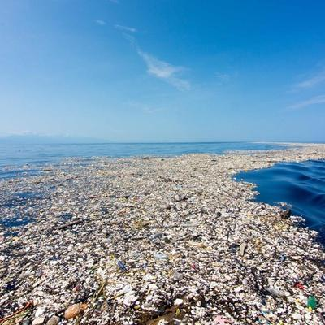

Le continent de plastique est une grande zone de déchets flottants située
dans l’océan Pacifique, formée par les courants marins. Il regroupe des
millions de tonnes de plastique, menaçant la faune et les écosystèmes marins.
La pollution marine est principalement causée par les activités humaines,
comme le rejet massif de plastiques et de déchets dans les océans. Les
industries, l'agriculture et les eaux usées contribuent également en
déversant des substances toxiques et des produits chimiques. Enfin, le
manque de gestion des déchets et les pratiques de surconsommation aggravent
ce problème mondial.